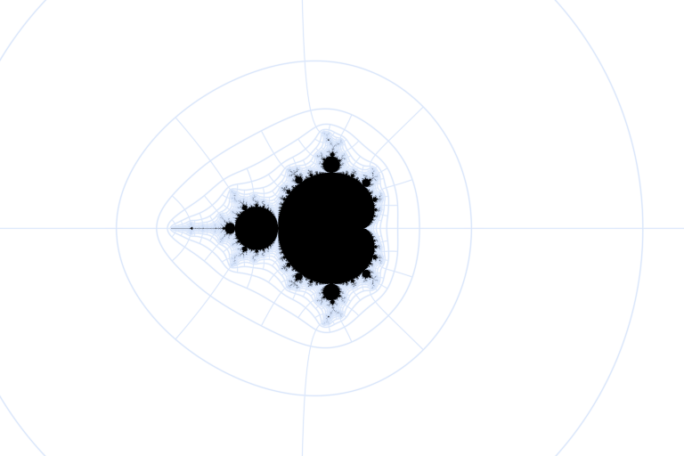
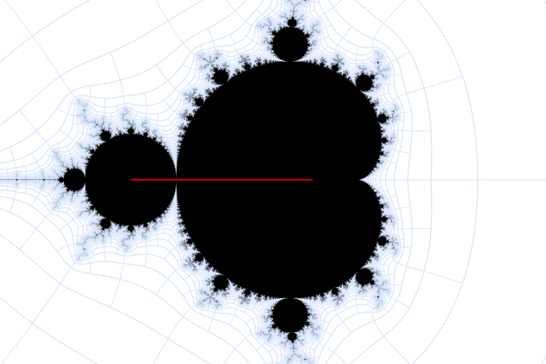
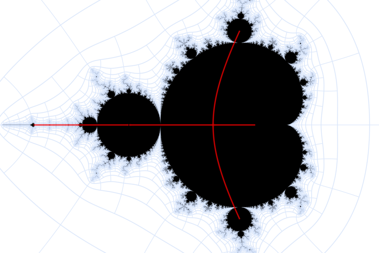
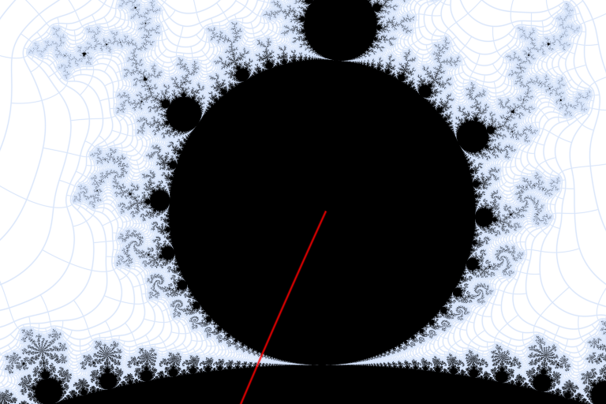
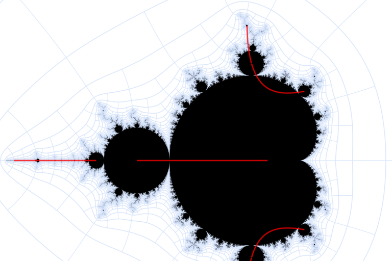
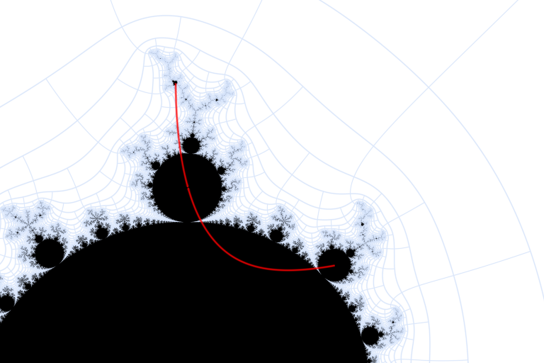
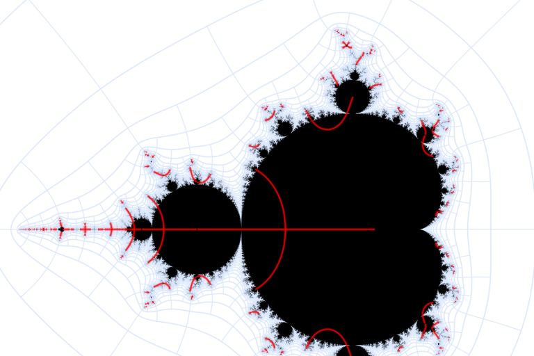

There are many wrong formulas online and in software for calculating angles outside the \(M\)-set.
Preliminaries
Invalid Formulas
Preliminaries
The \( \xi_i = \xi_i(z) \) are defined as function of \( z \)
\[\xi_0 = z, \quad \xi_1 = z^2+c, \quad \xi_2 = (z^2+c)^2+c, \quad \ldots\]
Boettcher Functions
The complement of the Mandelbrot set is denoted \( M' := \mathbb{C}_{\infty} \setminus M \), and this is a computable set. One simply checks that the above sequence tends to \( \infty \) starting with \( z=c \). The conformal map \( \Phi : M' \to \mathbb{C}_{\infty} \setminus \overline{D}(0,1) \) satisfies \( \Phi(c) = \phi_c(c) \) where \( \phi_c(z) \) is defined for \( z \) in a neighborhood of \( \infty \) as
\[ \phi_c(z) := \xi_0 (\xi_1/\xi_0^2)^{1/2} (\xi_2/\xi_1^2 )^{1/4} (\xi_3/\xi_2^2)^{1/8} \cdots , \quad \quad |z| > 1 + |c|. \]
The product converges quickly, and this formula is also valid for \( |z| > 2 \) in the case \( |c| \le 2 \). For such values of \( z \), the following conjugation property and asymptotic expansion are clear.
\[ \phi_c(z)^2 = \phi_c(z^2+c)\]
\[ \phi_c(z) = z + \frac{c}{2z} + \frac{c(2-c)}{8z^3} + O_c(z^{-5}) \]
For \( c \in M \), the map \( \phi_c(z) \) can be extended uniquely to the whole complement of the filled-in Julia set by \( \phi_c(z)^2 = \phi_c(z^2+c) \). However, we are interested in the case \( c \in M' \). Here, the Julia set is dust, and \( \phi_c(z) \) also can be extended via \( \phi_c(z)^2 = \phi_c(z^2+c) \) and continuity to a domain at least containing \( z=c \). This gives the definition of \( \Phi(c) \) for \( c \in M' \). Note that we have
\[ |\Phi(c)| = \lim_{n \to \infty} |\xi_n(c)|^{2^{-n}}\]
for all \( c \in M'\). The angle \( \operatorname{arg} \Phi(c) \) does not lend itself to such easy computation, so we must be resigned to the following incomplete calculation: In the dwell band \(i \lt -\log_2 \log_2 |\phi_c(z)| \lt i+1 \) we can calculated \( \arg \phi_c(z)^{2^i} \) precisely via the rollback formula
\[ \phi_c(z) \stackrel{?}{=} z \sqrt{\frac{\phi_c(z^2+c)}{z^2}}\]
However, any attempt to push this formula further than the stated dwell band is eventually doomed to result in errors as in Invalid Formulas. The correct sign of the square root in \( \phi_c(z)^2 = \phi_c(z^2+c) \) is too difficult to determine algorithmically. In summary, given a \( c \in M' \),
-
We can mark the dwell lines where \( -\log_2 \log_2 |\Phi(c)| \) is an integer.
-
In between dwell lines, where \(i \lt -\log_2 \log_2 |\Phi(c)| \lt i+1 \) and \(i \ge 0 \), we can mark where \( \Phi(c)^{2^i} \) is real. This gives a binary decomposition of \( M' \).
The silver lining of this second limitation is that plots of \( M' \) including these dwell lines and angle markers are not overcrowded with the latter away from \( M \): the angle markers are only only forced to get dense near \( M \).
Here is a plot of \( \Phi(c) \) maping \( M' \) to the complement of the unit disk, with the aforementioned lines shown.

Distance Estimates
Now, let \( \phi(z) \) be any conformal map from \( K'\) to \(\mathbb{C}_{\infty} \setminus \overline{D}(0,1) \). A formula for the distance from a point \(z_0 \in K' \) to the boundary of \( K \) is useful for drawing pictures. Let \( r \) denote this distance. It will be seen that
\[ \frac{|\phi(z_0)|^2-1}{4 |\phi(z)| |\phi'(z_0)|} \le r \le \frac{|\phi(z_0)|^2-1}{|\phi'(z_0)|} \]
and thus the geometric mean of this lower and upper bound provides a viable estimate of the distance.
For the upper bound,
\[ f(z) := \frac{\phi(z_0+r z) - \phi(z_0)}{1 - \overline{\phi}(z_0) \phi(z_0+r z)} \]
defines a map from \( D(0,1) \) to itself. Hence, the Schwarz lemma implies that \( f'(0) \le 1 \), which is precisely the right hand side. TODO: left hand side.
Invalid Formulas
Recall that \( \Phi(c)\) is defined for \( c \in M'\), and that, for \( |c| > 2 \),
\[ \frac{\Phi(c)}{c} = \left(1 + \frac{c}{c^2} \right)^{1/2} \left(1 + \frac{c}{(c^2+c)^2}\right)^{1/4} \left(1 + \frac{c}{((c^2+c)^2+c)^2}\right)^{1/8} \cdots \]
To what extent is this formula valid on the whole \( M'\)?
Since \( \xi_1(c)/\xi_0(c) = 1 + \frac{1}{c} \), the square root in \( \Phi(c) \) is discontinuous only on \( c \in [-1,0]\). Since \( [-1,0] \) lies completely within \( M \), The square root is continuous, and there are no problems with the first term.

Having had such great success with the first term, let's look at the discontinuities of the second term, which are solutions to \( c(c+1)^2 \in [-1,0] \). As the right hand side moves from \(0\) to \(-1\), one branch of the double root at \(-1\) moves to the left towards the period 3 island. The other branch and the root at \(0\) move towards each other until they meet at \(-4/27\), at which point they start heading off towards each of the period 3 bulbs. It looks like something clever has happened here — that the branches have somehow stayed within \(M\), keeping our formula continuous on \(M'\). However, a closer inspection reveals this to not be the case, and the formula will simply be wrong at least on one side of this discontinuity, and possibly even on both sides.


Once there is one hole or tear in the formula, the number just explodes under iteration. Here are the branch cuts of the third term, magnified to show clearly that they cut through \( M' \)


Finally, here are the branch cuts of the eighth term. Except for the ones on the real axis, they all cut right through \(M'\).

Angle Pairings
All rational angles with denominator 255:
These angles pairings can be calculated using only simple rational arithmetic and the fact the rays \( Phi^{-1}(e^{2 \pi i \theta} (1,\infty))\) are disjoint for distinct (\ 0 \lt theta \lt 1 \).
std::ostream& operator<<(std::ostream& s, mandel_frac x) {
s << x.num << "/(2^" << x.period << "-1)";
return s;
}
// find smallest y > x with y.period <= p
mandel_frac next_frac(mandel_frac x, uword p)
{
uword b = x.num, q = x.period;
uword s = 0, t = 0;
for (uword tt = 2; tt <= p; tt++) {
uword ss = ui_cdiv(b*ui_pow2m1(tt)+1, ui_pow2m1(q));
// either nothing found previously: this is the best
// or must be strictly less to replace, equality must be discarded to maintain minimal q
if (t == 0 || ss*ui_pow2m1(t) < s*ui_pow2m1(tt)) {
s = ss; t = tt;
}
}
return mandel_frac(s, t);
}
mandel_frac out_frac_from_in(mandel_frac x)
{
uword a = x.num, p = x.period;
if (p <= 2)
return mandel_frac(ui_pow2m1(p)-a, p);
else if (p == 3)
return mandel_frac(is_odd(a) ? a+1 : a-1, p);
again:
x = next_frac(x, p);
if (x.period == p) return x;
x = out_frac_from_in(x);
goto again;
}
// find the fraction that is paired with x (x of period >= 2)
mandel_frac find_frac_pair(mandel_frac x)
{
uword p = x.period;
mandel_frac i(1, p), o(2, p);
again:
if (i == x) return o;
if (o == x) return i;
CHECK(i < x);
i = next_frac(x < o ? i : o, p);
o = out_frac_from_in(i);
goto again;
}